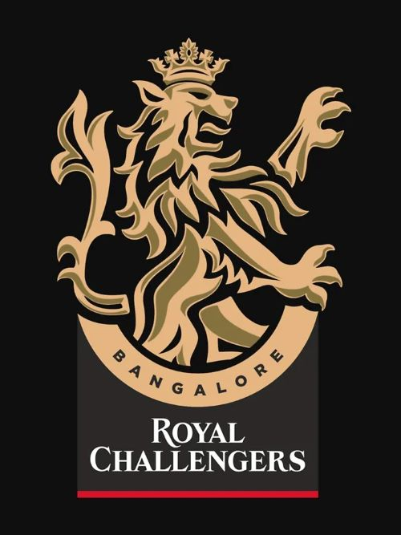

Royal Challengers Bangalore

Despite having top players like Virat Kohli and AB de Villiers, RCB has yet to win the IPL. Known for its explosive batting line-up, they are one of the most entertaining teams.